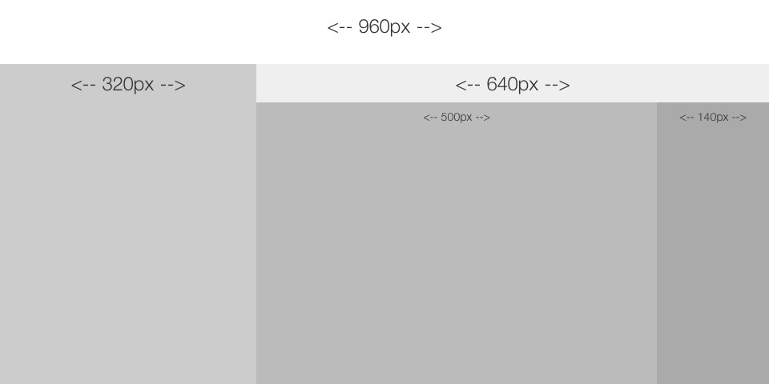
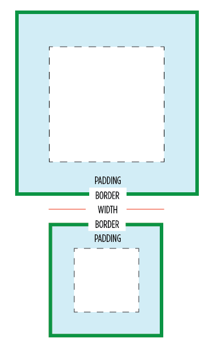
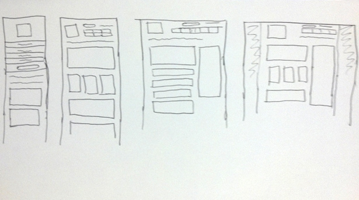
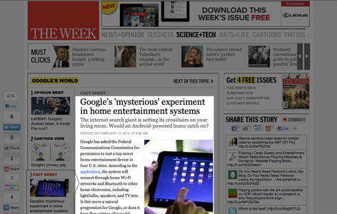
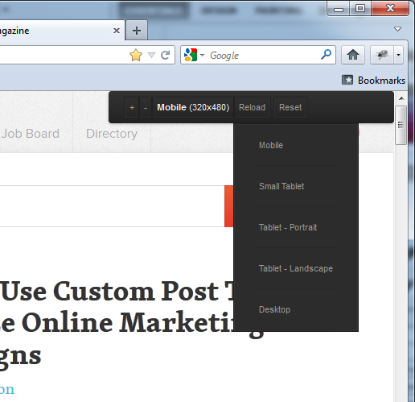
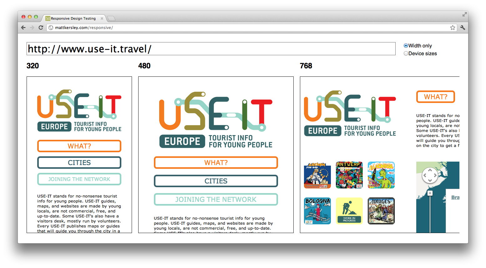
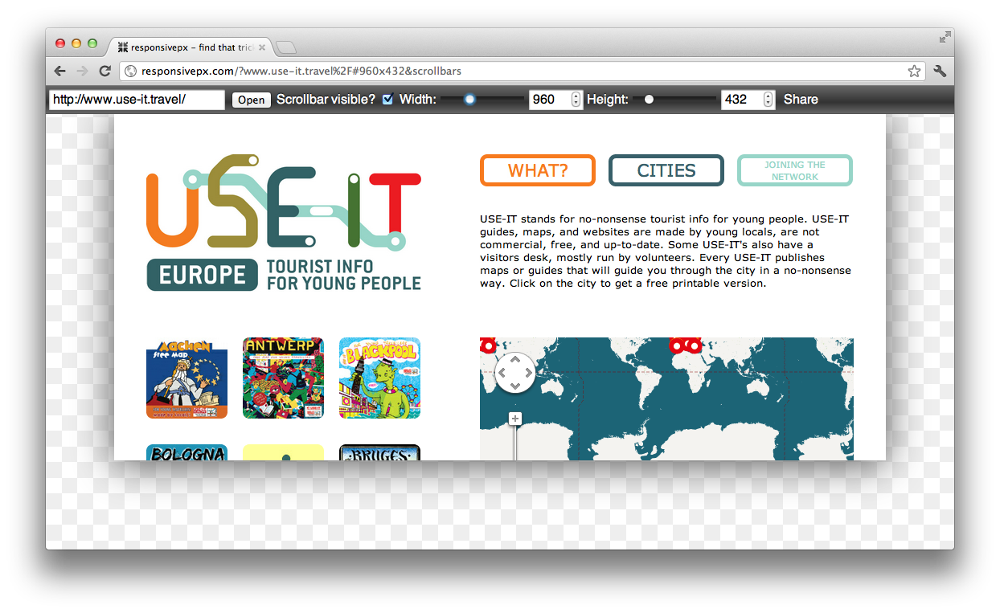

Rich Internet Applications
09.Responsive.
Web.Design
Responsive Web Design

Hey, look! I found a robot fossil!
Responsive Web Design?
Practical: Fluid Layouts

I'm not sure. I'm afraid we need to use ... Math.
Practical: Fluid Layouts
-
Two steps to converting a pixel based layout to a fluid one
- Convert the grid used to percentage based values
- Convert the font-sizes used to em based values
-
Magic formula:
target / context = result
Flexible Grid (1)
-
Let's start from this basic, pixel based, grid
 Our basic grid
Flexible Grid (2)
-
Code is pretty straightforward
<div id="wrapper" class="clearfix" style="width: 960px;"> <section id="secondary" style="width: 320px; float: left;"> ... </section> <section id="primary" style="width: 640px; float: left;"> ... <article style="width: 500px; float: left;"> ... </article> <aside style="width: 140px; float: left;"> ... </aside> </section> </div>
Flexible Grid (3)
-
Conversion to percentages via our magic formula
target / context = result-
#secondarytarget= width the box should be = 320pxcontext= width of its parent#sitewrapper= 960pxresult= 320px / 960px = 33.333333%
-
#primarytarget= width the box should be = 640pxcontext= width of its parent#sitewrapper= 960pxresult= 640px / 960px = 66.666667%
-
Flexible Grid (4)
-
Conversion to percentages via our magic formula
target / context = result-
articletarget= width the box should be = 500pxcontext= width of its parent#primary= 640pxresult= 500px / 640px = 78.125%
-
asidetarget= width the box should be = 140pxcontext= width of its parent#primary= 640pxresult= 140px / 640px = 21.875%
-
-
Finally, change the
widthof the#wrappertomax-width
Flexible Grid (5)
-
Resulting code
<div id="wrapper" class="clearfix" style="max-width: 960px;"> <section id="secondary" style="width: 33.333333%; float: left;"> ... </section> <section id="primary" style="width: 66.666667%; float: left;"> ... <article style="width: 78.125%; float: left;"> ... </article> <aside style="width: 21.875%; float: left;"> ... </aside> </section> </div>
Flexible Grid (6)
-
Other horizontal values such as margins and paddings are converted like you'd convert the width
target= target padding/margin you wantcontext= width of the parent
-
Use
box-sizing: border-box;when working with borders to adjust the box model being used-
That way the rendered width will be the CSS
widthyou specify; the padding and border won't be added to it
-
That way the rendered width will be the CSS
Flexible Font Sizes (1)
- Setting the
font-sizeto anem-based value will allow fluid font-sizes- An
emis a relative unit 1em= the font-size of the current context- By default the context is the
<body>, which defaults to 16px
- An
-
Let's take this example
<h1 style="font-size: 28px;">This is a test <small style="font-size: 16px;">and only a test</small></h1> <p style="font-size: 13px;">I'm not kidding!</p>
Flexible Font Sizes (2)
-
Conversion to percentages via our magic formula
target / context = result-
h1target= the font-size it should be = 28pxcontext= the font-size of its parent,body= 16pxresult= 28px / 16px = 1.75em
-
ptarget= the font-size it should be = 13pxcontext= the font-size of its parent,body= 16pxresult= 13px / 16px = 0.8125em
-
Flexible Font Sizes (3)
-
Conversion to percentages via our magic formula
target / context = result-
smalltarget= the font-size it should be = 16pxcontext= the font-size of its parent,h1= 28pxresult= 16px / 28px = 0.571428571em
-
Resulting code
<h1 style="font-size: 1.75em;">This is a test <small style="font-size: 0.571428571em;">and only a test</small></h1> <p style="font-size: 0.8125em;">I'm not kidding!</p>
-
Closing Notes
-
Don't round the values that you've calculated.
- 0.5em is not the same as 0.571428571em!
- When creating a fluid grid, it's not common to convert the vertical values.
Practical: Media Queries

The flight had a stopover on the Brain Slug Planet. Hermes liked it so much he decided to stay of his own free will.
Plan Ahead (1)
- Stop & think! Don't jump into your CSS editor and start coding but plan ahead.
-
Make sketches, or a prototype at the various widths
 Image by Webdesigner Depot
Plan Ahead (2)
-
Be inspired by sites such as Mediaqueri.es

Think Mobile First & Focus
-
Layouting the mobile view of the site first forces you to focus on what really matters: the content

Implement Mobile First & scale up (1)
-
Slice and code the smallest layout you've created,
then augment upwards/* General CSS (fonts, colors, etc) + Mobile First Layout */ html { ... } body { ... } h1 { ... } header { ... } section#main { ... } /* From 360 pixels width and up */ @media (min-width: 360px) { /* note: all styles above will be inherited! */ h1 { ... } section#main { ... } }
Implement Mobile First & scale up (2)
-
Include respond.js on your page to make oldIE interpret the rules
<!--[if (lt IE 9) & (!IEMobile)]><script src="js/respond.min.js"></script><![endif]--> -
Include a
viewportmetatag to let mobile browsers properly render the site<meta name="viewport" content="width=device-width, initial-scale=1.0" />
When to apply a different layout?
-
Don't use device breakpoints such as 320, 480, 768, etc.
- Devices will change.
- Screen-sizes vary, a lot: The trouble with Android
-
Do set breakpoints when the layout becomes awkward or unusable
- e.g. column becomes too narrow
What to change?
-
Font-sizes
- Change the basic
font-sizeofbodyand theems will do their work
- Change the basic
-
Positioning of the main boxes/containers
- Next to each other → Underneath each other
- Place text into CSS3 columns
-
Visibility of items
- Beware though, RWD is not only
display: none;
- Beware though, RWD is not only
-
Navigation is quite tricky
- Use one of the Responsive Navigation Patterns
-
Static elements vs. Interactive Elements
- eg. small screen device: image of a map
- eg. big screen device: interactive Google Maps interface
Practical: Fluid Media
Please Don't Drink The Emperor!
Fluid Images (1)
-
Prevent images from bleeding out of their fluid wrapper by limiting its
max-widthto100%img { max-width: 100%; _width: 100%; /* fix for IE6 who doesn't understand max-width */ }
Fluid Images (2)
-
Scaling down images isn't small bandwidth friendly
-
Some hacky solutions exist (list)
.htaccessredirect + resize script: Adaptive Images, Responsive-Images JS, etc.- Define bigger image as URL part or via data attribute: Responsive Enhance, etc.
- ...
-
A W3C community group is pondering how to fix it properly, preferably using a new syntax
<picture alt="A giant stone face at The Bayon temple in Cambodia"> <!-- small version --> <source src="small.jpg"> <!-- medium version, from 400px width --> <source src="medium.jpg" media="(min-width: 400px)"> <!-- large version, from 800px width --> <source src="large.jpg" media="(min-width: 800px)"> <!-- Fallback for browsers that don't support this elem/polyfill --> <noscript><img src="small.jpg" alt="..."></noscript> </picture>- Although not standarized, a polyfill already exists!
-
Some hacky solutions exist (list)
Fluid Images (3)
-
Problem: Mobile != small bandwidth
- It's not because I am visiting a site on my mobile phone that I am on the road
- I can be connected over wifi
- I can be at home in my couch
- ...
-
The current proposal is lacking, one also needs to take connection speed into account
- The Community group is aware of this
- Some JavaScript based solutions already exist
Fluid Video
-
Same trick as for images works
video, embed, object { max-width: 100%; _width: 100%; /* fix for IE6 who doesn't understand max-width */ } - Use of fitvids.js is recommended, as it uses intrinsic ratios.
Practical: Tools
The Smell-O-Scope is brilliant, I tell you!
Easily test your layouts

Test your layouts all at once

Find that tricky breakpoint

Test all mobile devices at once
Final Notes

Do you, Leela, copy and paste his response
till death do you part?
Future Friendly
-
We can't predict the future. Things will indefinitely change
- New devices
- New ways to accessing information
- ...
-
Don't code for the proprietary solutions that exist now, but keep the future in mind, be future friendly
- Create meaningful content and services; Focus!
- Define your data in way that it's interoperable and can exist later on
- Structure and store your content so that it can be read by anyone, on any device, any time, in different contexts
There is no mobile web
There is no Mobile Web. There is only The Web, which we view in different ways. There is also no Desktop Web. Or Tablet Web.
No Silver Bullets (1)
-
Again ⚑:
If you're looking for the more honest, truthful answer to pretty much any question on web design and usability, here it is: It depends.
No Silver Bullets (2)
- RWD is not the answer to everything.
-
In some cases, you'll need a combination of techniques, a variant or an alternative
- eg. RESS: Responsive Design + Server Side Components
- Selectively deliver lightweight versions of some parts of your site to mobile devices
- eg. MVC with Form-Factor Specific Views
- etc.
- eg. RESS: Responsive Design + Server Side Components
- In some cases you will need a separate app, or a separate website